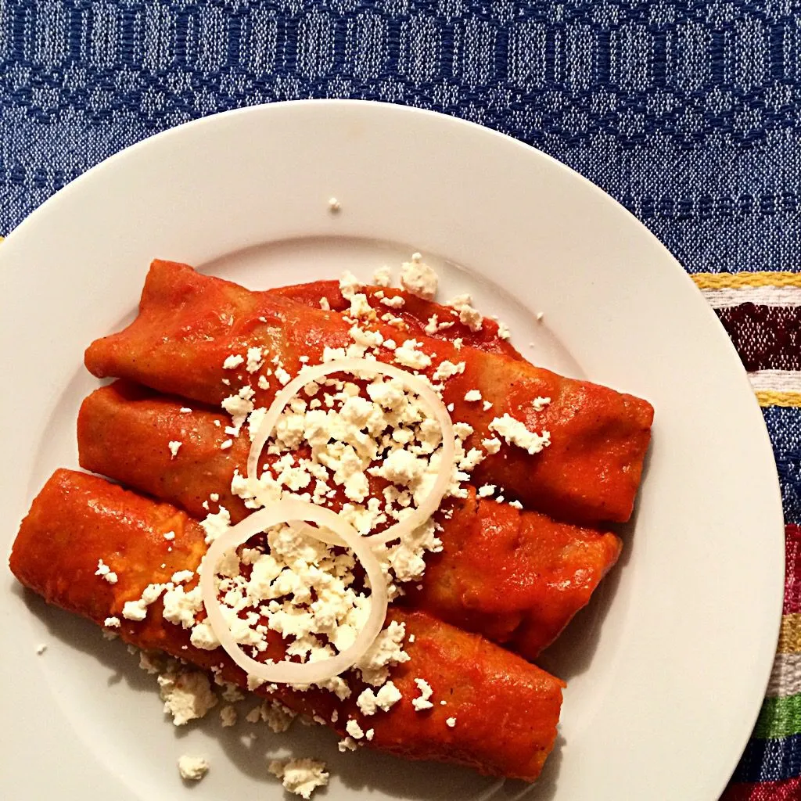

Home
Mexican Enchiladas

Enchilada sauce
- 8 guajillo or New Mexico peppers
- 1 ancho chile
- 1/4 of a large onion
- 1 large garlic clove
- 1 teaspoon kosher salt
- 1/2 teaspoon freshly ground black pepper
- 2 cups stock (either vegetable, beef, or chicken)
- 1 tablespoon vegetable oil
- 1 - 8 oz can tomato sauce
Ingredient for Enchiladas Rojas
- 3 cups enchilada sauce
- 14 corn tortillas
- oil for frying tortillas
Option for fillings
- 2 to 3 cups queso fresco, or shreeded beef or chicken
Toppings
- 2 cups shredded letttuce
- 1 cup queso fresco
- sliced radishes
Steps
Make The Enchilada Sauce
- Remove all seeds and stem from the peppers then rinse under cold water to remove any dust.
- In a medium pot, add the chiles, onions and garlic clove. Add enough water to cover the chiles.
- Cover and cook on medium heat for about 20 minutes or until very soft and pliable. Rest chiles in the water for another 10 to 15 minutes to cool off and finish hydrating the chiles.
- Transfer chiles to a blender or food processor and add 2 cups broth. Puree for about 1 minute. Note: you can do this in two different batches if the blender isn't big enough for all the ingredients at once.
- Strain the pureed chiles to remove the remaining seeds and skins (tip: push the chile mix with a spoon to get the most out of them).
- In a large saucepan, heat the 1 tablespoon of oil. Add the pureed chiles and tomato sauce. Cook, stirring often for about 10 minutes. Season with salt and pepper according to taste.
Make The Enchiladas Rojas
- Add about ¼ cup of oil to a small or medium skillet. Heat on medium-high heat. When the oil is very hot (but not smoky), add one tortilla at the time and cook each side for about 4 to 5 seconds or until tortilla is lightly fried (See notes section)
- As you fry each tortilla, drain any excess oil by tapping it into the pan then place on a plate with a paper towel. Repeat with remaining tortillas and add more oil if necessary.
- To assemble the enchiladas rojas, dip each tortilla into the warm sauce and place on the serving plates.
- Fill with your favorite filling. In this case we're using crumbled queso fresco but you can use shredded chicken, beef, beans or your favorite cooked vegetables.
- Either fold the tortilla like a taco or roll them as pictured below. I like to add a little more sauce on top for extra flavor.
- Sprinkle with queso fresco and other toppings you choose. I like to squeeze some lime juice to balance all of the flavors.
- Buen provecho!